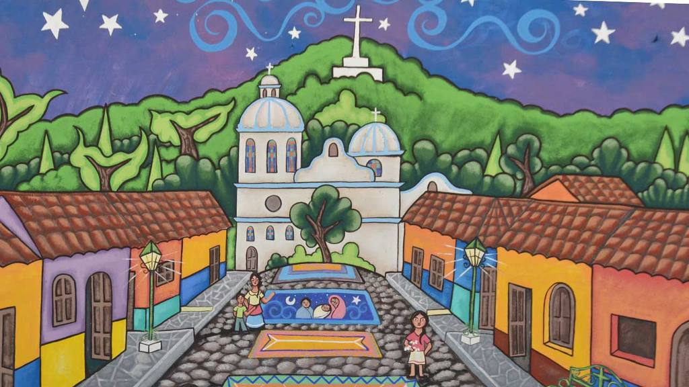

Sonsonate

Sonsonate es una antigua provincia de la Capitanía General de Guatemala que obtuvo su independencia de España en 1821 y que a partir de 1824 junto con la provincia de San Salvador formaron el país que hoy es llamado El Salvador. El Departamento está ubicado en la zona occidental del país. Tiene un área de 1225.77 km2 y una población estimada de 438 960 habitantes (2007), con una densidad de población de aproximadamente 423 hab/km². El fútbol es el deporte favorito. Es sede del Sonsonate Fútbol Club de la primera división de El Salvador, y juega en el estadio Ana Mercedes Campos.
Lugar turistico
Ataco: Un pedacito de cielo en la tierra
Ambiente tranquilo, murales a cada paso, flores y clima fresco, son algunos de los atractivos de Concepción de Ataco. Calles empedradas, iluminadas con faroles y las paredes de las casas pintadas con hermosos murales, son escenas que sólo puede disfrutarse en el pintoresco pueblo de Concepción de Ataco, en Ahuachapán, a 106 kilómetros de San Salvador.